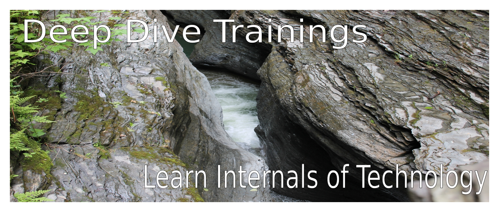

|

- 
About Us
Y TO Y Technologies is started with the mission of enabling Affordable IT to businesses and citizens. Enterprise IT is transforming from Traditional IT to Cloud Computing. Cloud is changing from IT as a function to IT as a Service to business. Founders of this organization were positioned as Enterprise Infrastructure Architects in fortune 100 companies and have more than a decade of experience in Strategizing, Planning, Architecting, Designing, Building Running & Securing Enterprise IT Infrastructure.
Y TO Y Knowledge Center:
Our IT Knowledge Center Trainings will bridge the knowledge gap on the emerging technologies in Enterprise IT Infrastructure such as Cloud computing,Virtualizationand Open Source technologies, which will help enable businesses to transform their IT Infrastructure and enable individuals to transform their skills in emerging technologies.Our Trainings are laid out, considering how to use technologies based on the business needs. Our training follow the Enterprise IT Technology lifecycle model Strategize, Plan, Architect, Design, Build, Run & Secure enterprise IT. |
|